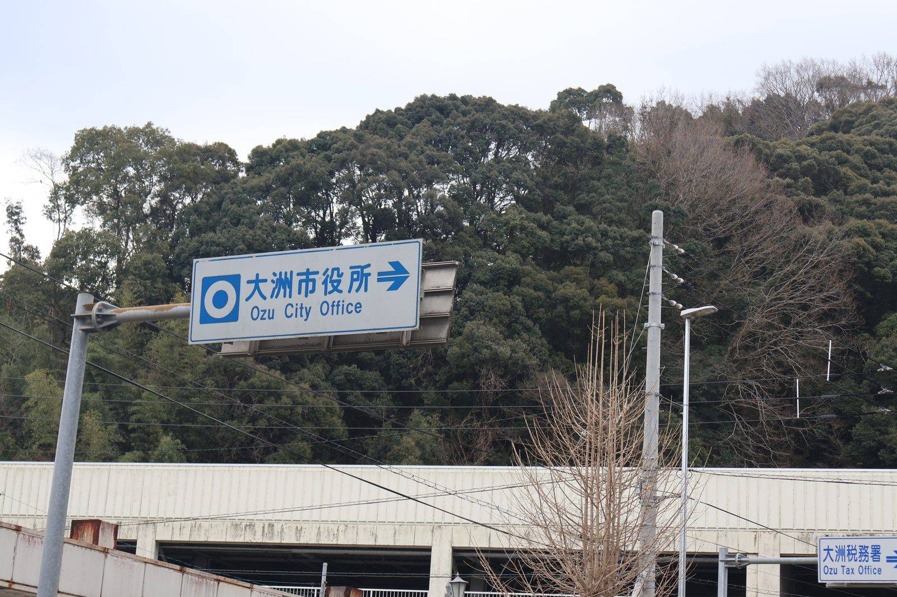

大洲の暮らし ・ 出典: 大洲市役所 ・ 約4分で読める

要点
大洲市は、軽自動車税を含む市税のスマートフォン決済に対応している。
対応アプリはPayPay・au PAY・d払い・PayBの４種類だ。
条件は一つだけ。コンビニ収納用のバーコードが付いた納付書があること。それをアプリのカメラで読むだけで終わる。
手数料は無料（通信費は自己負担）。支払上限は30万円。24時間いつでも払える。
調べていて意外だったのが、対象になる公金の幅の広さだ。市のページには一覧が載っている。
水道代も給食費も、スマホで払える。市税のページに書いてあるので気づきにくいが、対象は「コンビニで払えるバーコード付き納付書が出るもの」全般だ。
納付書を持って平日に金融機関へ行くという前提が、かなりの範囲で崩れている。
注意点として広く知られているのが、軽自動車の車検（継続検査）との関係だ。ここは説明が少し古くなっているので、丁寧に書く。
大洲市のページには「領収書または軽自動車税継続検査用納税証明書が必要な場合は、市役所、金融機関またはコンビニで納付してください」と書かれている。
スマホ決済では領収書が発行されず、取引履歴で代用することになるからだ。
ただし、この案内の前提になっている「車検には紙の納税証明書が要る」という部分は、すでに変わっている。
2023年（令和５年）１月から「軽JNKS（軽自動車税納付確認システム）」の運用が始まった。
自治体が持つ軽自動車税の納付情報がシステムで連携され、軽自動車検査協会が納税の有無をオンラインで確認できるようになった仕組みだ。
これにより、３輪または４輪以上の軽自動車については、継続検査の窓口で納税証明書を提示することは原則として不要になっている。2025年４月からは２輪の小型自動車も対象に加わった。
では安心してスマホで払っていいのか。ここが肝心なところで、結論としては「車検直前ならやめたほうがいい」で変わらない。理由が違うだけだ。
軽JNKSで証明書が省略できるのは、納付情報がシステムに登録されている場合に限られる。
そして納付情報が反映されるまでには２週間程度かかるとされている。
大洲市のページも「納付確認まで最大２週間程度」と案内している。
つまり「証明書が出ないから困る」のではなく、「払った記録がまだシステムに届いていないから困る」のが今の姿だ。
過去年度分を含めて未納があるとき、中古車を買った直後、他の市区町村から引っ越した直後なども、照合ができず証明書が要る場合がある。
実用的な線引きはこうなる。車検まで２週間を切っているならコンビニか窓口で払う。それ以上余裕があるならスマホ決済で問題ない。
なお、大洲市のこのページの更新日は2023年３月27日で、軽JNKSが始まった直後のまま止まっている。
案内が古いというより、更新が追いついていない状態だと思われる。
これは大洲市に限った話ではない。県内の主な市を確認した。
松山市も市税のスマートフォン決済に対応している。今治市はPayPay・au PAY・d払い・J-Coin Pay・楽天ペイ・PayB・モバイルレジの７種類と、県内では対応アプリ数が多い。
西条市もPayB・PayPay・楽天銀行・楽天ペイ・au PAY・ゆうちょPayなど多数に対応している。
大洲市の４種類は、県内で見ると少なめではあるものの、主要なアプリは押さえている。
どの市でも「領収書が出ない」「納税証明書がすぐに出ない」点は共通の注意事項として案内されていた。
ただし、アプリの数を市ごとに比べること自体が、もう古い見方になりつつある。
令和５年４月１日から、「地方税統一ＱＲコード（eL-QR）」を使った納付が全国で始まっている。
納付書に印刷されたeL-QRをスマホで読むか、eL番号をパソコンに入力すると、地方税共同機構が運営する「地方税お支払サイト」から納付できる仕組みだ。
スマホ決済アプリだけでなくクレジットカードやインターネットバンキングも使え、全国のeL-QR対応金融機関の窓口やＡＴＭでも払える。
対象税目には固定資産税・都市計画税・自動車税・軽自動車税が含まれている。
自治体ごとにアプリを用意するのではなく、全国共通の入口を１つ作るという方向に制度が動いた、ということになる。
では大洲市の納付書にeL-QRが付いているのか。ここは正直に書く。
大洲市の公開ページを税務課・会計課の一覧まで見て回ったが、eL-QRや地方税お支払サイトについての案内は見つけられなかった。
案内されているのは、あくまでコンビニ収納用バーコードによる４アプリの方法だけだ。
実際に届く納付書にeL-QRが印刷されているかどうかは、手元の納付書を見るのが確実だと思う。分かり次第、この記事に追記したい。
「役所の税金はキャッシュレスに対応していない」と思い込んでいた。
調べたら、大洲市はちゃんと対応していたし、水道代や給食費まで対象だった。確認せずに諦めていたことに気づかされたテーマだった。
一方で、車検の注意書きのように、制度は変わったのに案内だけが残っているという場所もある。
こういうのは行政が怠けているというより、更新の手が足りていないだけだと思う。だからこそ、使う側が自分で確かめる価値がある。